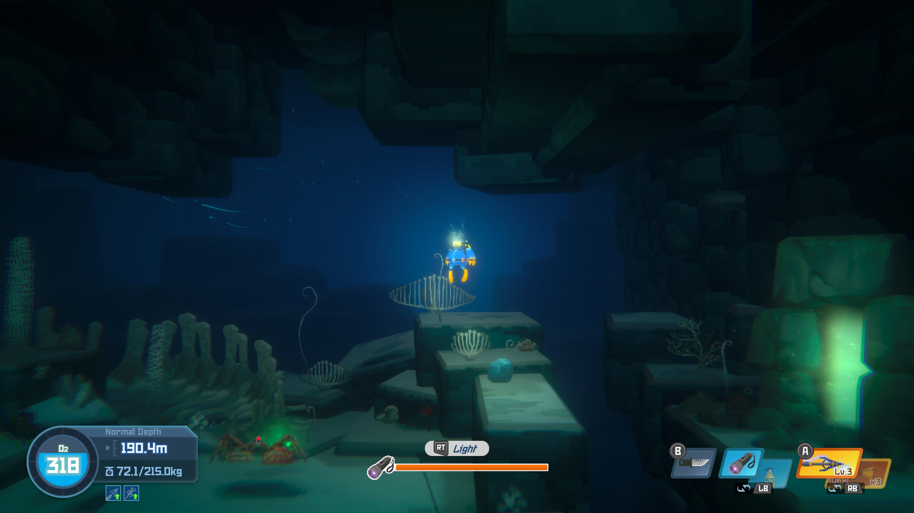
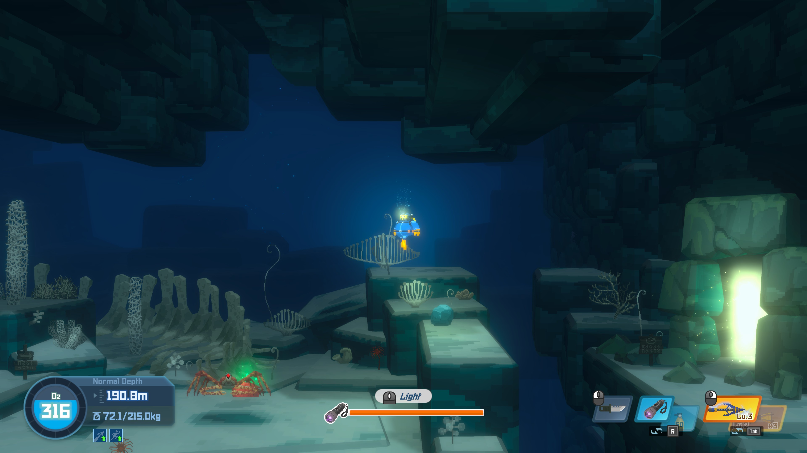

DAVE THE DIVER
Clear Waters
A clearer view, from edge to edge.
Choose which screen effects to remove.
OFF
Original screen effects

A
B
Look at the screen edgesOriginal pixels · 100% size
ON
Clear Waters enabled

A
B
Compare the coral and rock outlinesOriginal pixels · 100% size